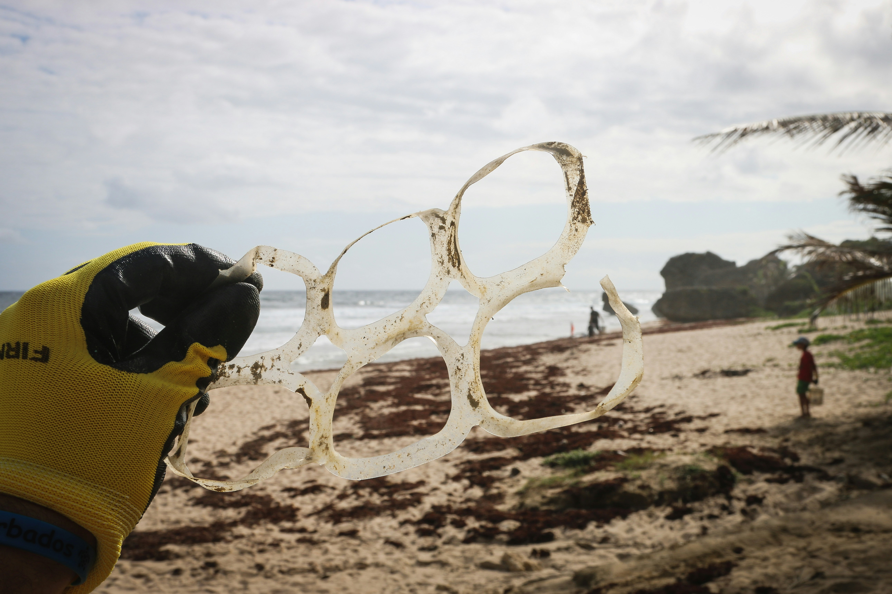
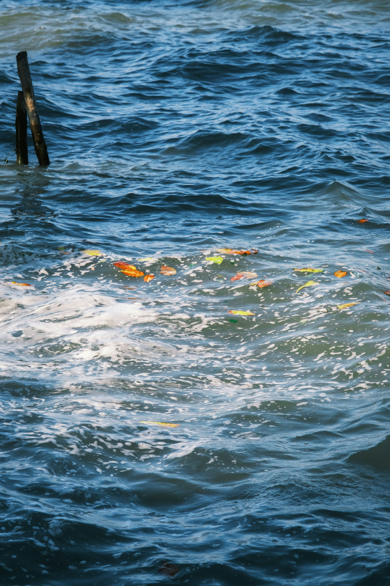
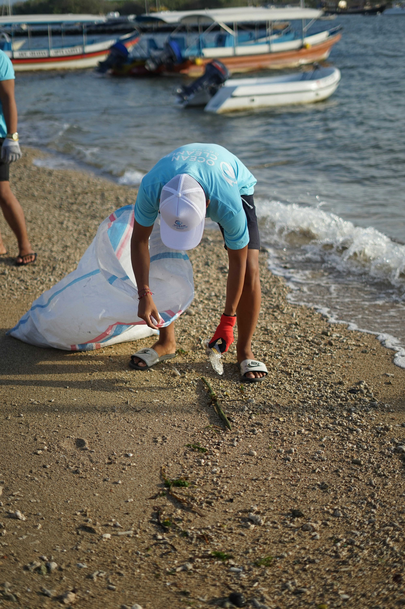
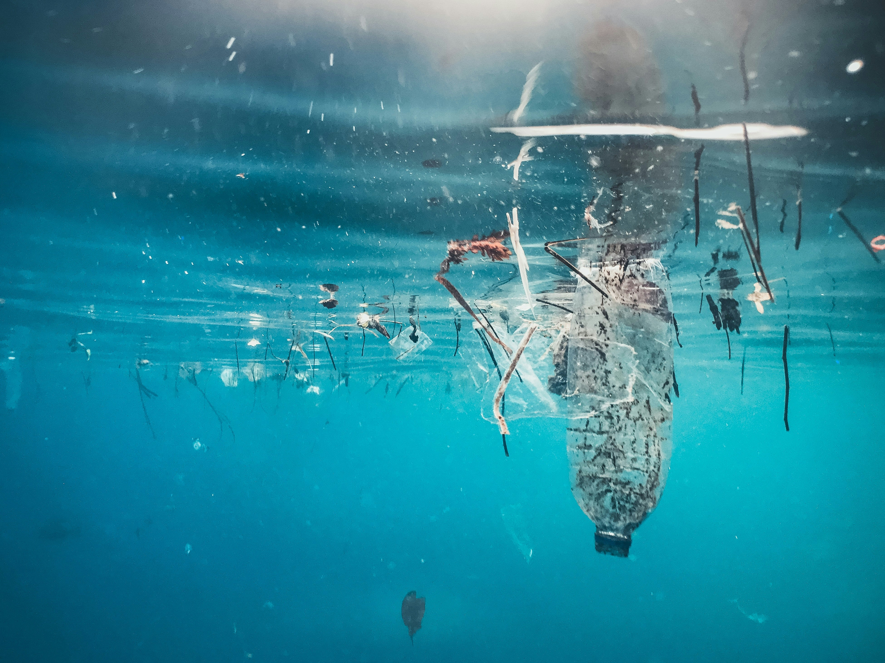

There are several ways people can help prevent ocean pollution. One of the most effective approaches is to stop rubbish from reaching waterways in the first place. Since plastic can be transported from land through rivers and streams to the ocean, reducing unnecessary plastic use and disposing of rubbish correctly can help prevent marine pollution. Earth Sciences New Zealand specifically highlights the importance of managing plastic on land before it reaches rivers. Individuals can help by using reusable products, avoiding unnecessary single-use plastics, recycling correctly where facilities accept the material, putting rubbish in bins and taking part in beach or community clean-ups. Governments and businesses also have an important role because they can reduce the amount of unnecessary plastic being produced and improve systems for collecting and managing waste. New Zealand has already introduced regulations to phase out certain hard-to-recycle and single-use plastic products as part of efforts to reduce plastic waste. Overall, preventing ocean pollution requires action before waste reaches the ocean: reducing plastic use, managing rubbish responsibly, protecting waterways and supporting policies that reduce unnecessary plastic can all help protect Aotearoa New Zealand’s marine environment and the animals that live in it.




© Ocean Pollution Parahanga Moana | Website by Sienna Yoo